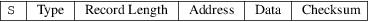

srec_motorola - Motorola S-Record hexadecimal file format
This format is also known as the Exorciser, Exormacs or Exormax format.
Motorola’s S-record format allows binary files to be uploaded and downloaded between two computer systems. This type of format is widely used when transferring programs and data between a computer system (such as a PC, Macintosh, or workstation) and an emulator or evaluation board for Motorola microcontrollers and microprocessors.
The
Lines
Most S-Record file contain only S-Record lines (see the next
section), which always start with a capital S character.
Some systems generate various “extensions[rq] which
usually manifest as lines which start with something else.
These “extension[rq] lines may or may not break other
systems made by other vendors. Caveat emptor.
The
Fields
The S-Record format consists of 5 fields. These are the type
field, length field, address field, data field, and the
checksum. The lines always start with a capital S
character.

|
Type |
The type field is a 1 character field that specifies whether the record is an S0, S1, S2, S3, S5, S6, S7, S8 or S9 field. |
Record Length
The record length field is a 2 character (1 byte) field that specifies the number of character pairs (bytes) in the record, excluding the type and record length fields.
|
Address |
This is a 2-, 3- or 4-byte address that specifies where the data in the S-Record is to be loaded into memory. | ||
|
Data |
The data field contains the executable code, memory-loadable data or descriptive information to be transferred. |
Checksum
The checksum is an 8-bit field that represents the least significant byte of the one’s complement of the sum of the values represented by the pairs of characters making up the record’s length, address, and data fields.
Record Types
|
S0 |
This type of record is the header record for each block of S-Records. The data field may contain any descriptive information identifying the following block of S-Records. (It is commonly “HDR[rq] on many systems.) The address field is normally zero. | ||
|
S1 |
A record containing data and the 2-byte address at which the data is to reside. | ||
|
S2 |
A record containing data and the 3-byte address at which the data is to reside. | ||
|
S3 |
A record containing data and the 4-byte address at which the data is to reside. | ||
|
S5 |
An optional record containing the number of S1, S2 and S3 records transmitted in a particular block. The count appears in the two-byte address field. There is no data field. |
This record is optional, you do not have to use it. Nobody knows if you can have more than one in a file; and if you do, nobody knows whether or not the line count resets after each one.
The srec_cat command will only ever use one, provided the number of lines fits in 16 bits, otherwise it will use S6.
|
S6 |
An optional record containing the number of S1, S2 and S3 records transmitted in a particular block. The count appears in the three-byte address field. There is no data field. |
This record is optional, you do not have to use it. Nobody knows if you can have more than one in a file; and if you do, nobody knows whether or not the line count resets after each one.
Nobody knows what happens if you mix S5 and S6 records in a file.
The srec_cat command will only ever use one, provided the number of lines fits in 24 bits.
|
S7 |
A termination record for a block of S3 records. The address field may contain the 4-byte address of the instruction to which control is passed. There is no data field. | ||
|
S8 |
A termination record for a block of S2 records. The address field may optionally contain the 3-byte address of the instruction to which control is passed. There is no data field. | ||
|
S9 |
A termination record for a block of S1 records. The address field may optionally contain the 2-byte address of the instruction to which control is passed. If not specified, the first entry point specification encountered in the object module input will be used. There is no data field. |
Size
Multiplier
In general, binary data will expand in sized by
approximately 2.4 times when represented with this
format.
Here is an example S-Record file. It contains the data “Hello, World[rq] to be loaded at address 0.
S00600004844521B
S110000048656C6C6F2C20576F726C640A9D
S5030001FB
S9030000FC
srec_cat
version 1.65
Copyright (C) 1998, 1999, 2000, 2001, 2002, 2003, 2004,
2005, 2006, 2007, 2008, 2009, 2010, 2011, 2012, 2013, 2014,
2018, 2019, 2022 Peter Miller
The srec_cat program comes with ABSOLUTELY NO WARRANTY; for details use the ’srec_cat -VERSion License’ command. This is free software and you are welcome to redistribute it under certain conditions; for details use the ’srec_cat -VERSion License’ command.